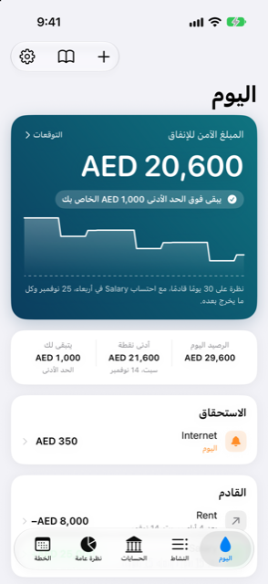

الدليل › ابدأ من هنا
ما الغرض من Damla
الفكرة في صفحة واحدة، وخريطة للتطبيق.
Damla تطبيق للتدفق النقدي يعيش على جهاز iPhone الخاص بك. يجيب كل يوم على سؤال واحد: هل سترى في أموالك ما يكفي حتى دخلك القادم، وماذا يحدث إذا أنفقت، أو التزمت بشيء، أو أجّلت شيئًا.
تخبر Damla بما يحدث مع أموالك - جملة، أو نموذجًا، أو تنبيهًا من البنك، أو رسالة ملصوقة. ويحتفظ Damla بالدفاتر بشكل صحيح: كل مبلغ ينتقل بين مكانين، فلا يُحتسب شيء مرتين. كل الحسابات - الأرصدة والأقساط والتوقعات والأرباح - يقوم بها رمز برمجي عادي ومختبَر. لا يفعل النموذج الذي يعمل على الجهاز سوى المساعدة في قراءة كلماتك. تبقى بياناتك على الهاتف: لا حساب، ولا خادم، ولا تتبع.

متى تستخدمه
- كل يوم، لترى الرقم الوحيد الذي يهم: كم من المال آمن أن تنفقه.
- قبل أن تشتري شيئًا أو تلتزم بدفعة، لترى ماذا سيفعل بالأسابيع القادمة.
- عند وصول رسالة من البنك، لتُسجَّل العملية دون أن تضطر إلى كتابتها بنفسك.
- عندما تريد أن تعرف أين ذهب المال، أو ما تملكه، أو إن كان بوسعك تحمّل نفقة شيء تدور في بالك.
التبويبات الخمسة
يحتوي التطبيق على خمسة تبويبات في الأسفل.
- افتح Damla. يطلب Face ID عند فتحك له، ثم يطلبه مرة أخرى فقط بعد أن يمر على غيابه المدّة التي تختارها في الإعدادات ضمن أساسيات، اطلب Face ID (في كل مرة، أو بعد 1 أو 5 أو 15 دقيقة). أتمتات Shortcuts التي تمرر رسائل البنك إلى Damla لا تحتاج إليه.
- اليوم هو المكان الذي تهبط فيه. تعرض البطاقة الكبيرة ذات اللون الأزرق المخضرّ آمن للإنفاق، وما إذا كان رصيدك يبقى فوق الحد الأدنى لديك، ورسمًا بيانيًا صغيرًا لرصيدك القادم (انقر عليها لفتح التنبؤ الكامل وماذا لو). وتحتها تجد ما هو قادم، وأي شيء ينتظرك.
- انقر النشاط لرؤية كل عملية. انقر إحداها لتغييرها.
- انقر الحسابات لرؤية بنوكك ومدخراتك وبطاقاتك وقروضك واستثماراتك وأصولك والأشخاص.
- انقر نظرة عامة لترى أين ذهب المال، وميزانيتك، وصافي ثروتك، وحيازاتك.
- انقر الخطة لرؤية كل ما يلتزم بأموال مستقبلية: الدخل والفواتير، وخطط الأقساط، والمشتريات المرحلية، والفواتير القادمة، والأشخاص الذين أقرضتهم أو تدين لهم.
- في تبويب اليوم، يفتح رمز الترس في أعلى اليمين الإعدادات، حيث تجد أيضًا الدليل، والنسخة الاحتياطية، ودليل الإعداد. ويفتح رمز الكتاب المجاور له الدليل مباشرةً.
من الجيد أن تعرف
لا يغادر الهاتف أبدًا أي حساب أو رصيد أو عملية أو ملاحظة، ويعمل التطبيق بلا إنترنت بشكل كامل. عمليات البحث الوحيدة هي القليلة الاختيارية منها، ولا ترسل أي بيانات شخصية - انظر الخصوصية وبياناتك.
مواضيع ذات صلة
هل هناك شيء غير واضح أو ناقص؟ اكتب إلى support@raveniq.ai واذكر الصفحة.